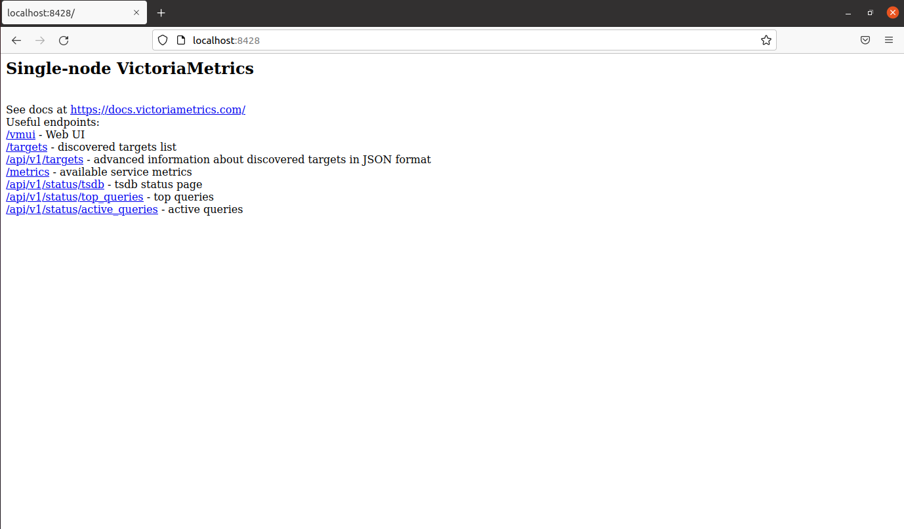

Installation
Устанавливаем систему на операционную систему Ubuntu Desktop 20.04.3.
Установка состоит из двух частей.
Grafana
Выбираем Open-Source (OSS) версию Grafana, так как пользоваться хотим бесплатным продуктом.
Enterprise-версия отличается от OSS только наличием заблокированных возможностей, которыми можно пользоваться, купив лицению.
Согласно инструкциям выполняем следующие шаги:
Добавляем ключ:
$ wget -q -O - https://packages.grafana.com/gpg.key | sudo apt-key add -Добавляем для пакетного менеджера ссылку на репозиторий Grafana:
$ echo "deb https://packages.grafana.com/oss/deb stable main" | sudo tee -a /etc/apt/sources.list.d/grafana.list
Обновляем список пакетов:
$ sudo apt update
Устанавливаем Grafana:
$ sudo apt install grafana
Разрешим запускаться Grafan’е автоматически при включении компьютера:
$ sudo systemctl enable grafana-serverЗапустим Grafan’у:
$ sudo systemctl start grafana-server
Проверяем, работает ли Grafana. Для этого запускаем браузер и в строке адреса пишем:
http://localhost:3000. Если мы всё сделали правильно, появится чёрная страница, на которой в качестве имени пользователя и пароля необходимо ввестиadmin. Сразу же перейдём на страницу смены пароля, а, сменив его, увидим стартовую страницу Grafan’ы:
Установка Grafan’ы завершена.
Описание настройки работы совместно с Victoriametrics - ниже.
Victoriametrics
Выполняем в терминале команду:
$ snap install victoriametrics
Проверяем установку: запускаем браузер и в адресной строке пишем
http://localhost:8428. Должна появиться страница:
Victoriametrics будет автоматически стартовать при запуске компьютера.